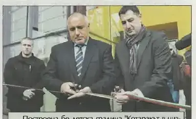
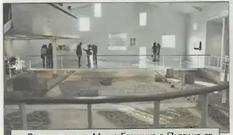

2013 — Годината на основите
Велоалеите тръгват, калдъръмът се пренарежда, отчетът излиза като печатна книжка.
Трите акцента на годината · подбрани на ръка
Стартът, улица по улица. Кадърът, в който кметът реди камъни, се издирва в архива.
подробностите — на мястото им →Единственият на Балканите, един от трите в света от този тип.
подробностите — на мястото им →Пирамидите пред общината — „Цветен град“ дава първата си реколта.
подробностите — на мястото им →Хрониката на годината · месец по месец · 3 записа: 3 събития от вестника
Всичко на едно място, по реда на случването. Щракни албум — разгъва се тук, без да напускаш годината. Събитията от общинския вестник отварят страницата-източник в четеца. Записите от вестника са подбраните — кадрите и текстовете им предстои да бъдат подменени с по-добри, а някои ще се слеят с разказите по темите.

стр. 4В район „Южен“ бе построена нова детска градина „Котаракът в чизми“ с капацитет 8 групи за около 200 деца. Лентата прерязаха министър-председателят Бойко Борисов и кметът инж. Иван Тотев, а градината разполага със самостоятелна кухня, пералня, плувен басейн и физкултурно-музикален салон.
брой 2 · 29 юни 2015 · стр. 4 — отвори страницата →
стр. 5Раннохристиянската Малка базилика в Пловдив отвори врати за нов живот след цялостна реставрация. Възстановени са 110 квадратни метра уникални мозайки, а обектът е съоръжен с най-съвременни технологии за климатизация и осветление.
брой 2 · 29 юни 2015 · стр. 5 — отвори страницата → стр. 5
стр. 5Завърши строежът на ново крило на обединено детско заведение „Космонавт“, започнат през 2012 г. Обектът бе официално открит на 23 октомври 2013 г. и разшири местата за деца в общинските градини.
брой 1 · 29 май 2015 · стр. 5 — отвори страницата →Отчет 2013 — печатната книжка — внесен в ОбС, отпечатан за гражданите.